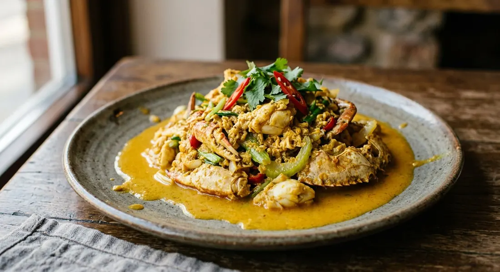

Crab stir-fried in a yellow curry-powder sauce of evaporated milk, egg and roasted chilli paste — the egg stirred to soft curds just before the plate, eaten over hot rice.

ผัดผงกะหรี่ is a technique before it is a dish: anything — crab, prawns, squid — stir-fried with curry powder (ผงกะหรี่) and finished with egg. The crab version is the one restaurants put on the special board, and the price follows the crab: Wongnai's cook opens by quoting 2,000 baht a plate at a famous restaurant, which is exactly the motivation to buy a big fresh crab at the market for a fraction of that and cook it at home.
Wongnai calls it a Chinese-style dish — สูตรฮองเฮา, "the empress's formula" — and the method bears it out: everything is prepped before the fire, the pan is hot, and the stir-fry happens fast. The sauce is not coconut milk, as westerners guess from the colour, but นมข้นจืด — evaporated milk — carrying curry powder, roasted chilli paste (น้ำพริกเผา), oyster sauce and beaten eggs. The milk turns the curry powder into a rich yellow cream; the eggs set into soft, silky curds.
The most-copied home recipe belongs to tukata001 of the Pantip food board (ครัวตุ๊กตา), which Kapook later republished — that is the recipe below. Tukata's instruction to herself is the key to the whole dish: ผัดแป๊บเดียว, stir only a moment. The sauce thickens almost the instant it hits the pan, and the skill everyone cites is stopping while the egg is still creamy.
| Thai | English | Amount |
|---|---|---|
| ปู | Crab, cleaned and cut in pieces | 1 kg |
| น้ำมันพืช | Vegetable oil | 1–2 tbsp |
| กระเทียมสับ | Garlic, chopped | 1–2 tbsp |
| หอมใหญ่ | Onion | 1 |
| ผงกะหรี่ | Curry powder (for the pan) | 1 tbsp |
| พริกชี้ฟ้า | Red spur chillies, sliced diagonally | 2–3 |
| ใบขึ้นฉ่าย | Celery leaves | 1 cup |
| ผงกะหรี่ | Curry powder (for the sauce) | 2–3 tbsp |
| น้ำตาลทราย | Sugar | 1 tbsp |
| น้ำพริกเผา | Roasted chilli paste (nam prik pao) | 2–3 tbsp |
| น้ำมันหอย | Oyster sauce | 2 tbsp |
| นมข้นจืด | Evaporated milk | 1 can |
| ไข่ไก่ | Eggs | 3 |
| พริกไทยป่น | Ground white pepper | 1 tsp |
| ซีอิ๊วขาว | Light soy sauce | 2 tbsp |
The Wongnai pot: 1 crab boiled ten minutes until the shell turns orange, then stirred into a sauce of 4 tbsp curry powder fried in oil with a cup of Carnation evaporated milk, 2 eggs, light soy, a teaspoon of sugar and 3 tbsp nam prik pao — onion, spring onion, celery and red chillies at the end. The Aroifin pot: raw crab legs and claws fried in garlic, a little water added and the pan covered to cook them through, then a sauce of 150 ml evaporated milk, 3 tbsp curry powder, soy, oyster sauce and 3 eggs — the lid trick means no pre-boiling. The Sanook pot: no milk at all — 5 eggs beaten with curry powder and seasonings (including fish sauce) poured over crab fried raw in the wok with garlic and bird's eye chilli.
How the crab cooks before it meets the sauce. Kapook (and tukata001's Pantip original) steam the crab first — the frozen crab is simply reheated before the pan. Wongnai boils the crab a full ten minutes until the shell turns orange. Aroifin skips pre-cooking entirely: raw pieces go in the wok with a splash of water and a lid, and cook in their own steam. Sanook also cooks raw crab, open-pan. The steamed route is the safest for frozen crab; the lid route keeps the meat springy.
The milk. Kapook, Wongnai and Aroifin all build the sauce on evaporated milk (นมข้นจืด) — one can, one cup, or 150 ml. Sanook uses none: its sauce is eggs, curry powder and seasonings thinned with a little water. A milkless version is still recognisably the dish, but the yellow cream that defines the restaurant version comes from the evaporated milk.
The eggs and when they go in. Kapook, Wongnai and Aroifin beat the eggs into the sauce before it reaches the pan, so the egg sets as the sauce thickens. Sanook beats the eggs separately and pours them over the crab in the wok, waiting for them to set before stirring. Egg counts run from 2 (Wongnai) through 3 (Kapook, Aroifin) to 5 (Sanook) — the soft-set rule matters more than the number.
The seasonings. Oyster sauce appears in Kapook, Aroifin and Sanook but not in Wongnai, which leans on light soy and a teaspoon of sugar instead. Fish sauce shows up only in Sanook. Everyone keeps the two non-negotiables: curry powder and nam prik pao.
The chilli. Kapook, Wongnai and Aroifin use red spur chillies (พริกชี้ฟ้า) — colour more than heat, sliced on the diagonal. Sanook uses bird's eye chillies (พริกขี้หนู), a genuinely hot version. Tukata confesses she once swapped in red bird's eyes when the shop had no spur chillies and liked it — hot, she notes, but good.
This recipe is translated from the following Thai-language sources. Where they disagree, we've said so.
1. Kapook Cooking — "ปูผัดผงกะหรี่ สูตรนี้เด็ดทำกี่ครั้งก็อร่อย" (the recipe used here; republished from tukata001) — cooking.kapook.com
2. Pantip — "ปูผัดผงกะหรี่ สูตรนี้ทำกี่ครั้งก็อร่อย by ครัวตุ๊กตา" topic 38976551 (the original post; the frozen-crab steaming note) — pantip.com
3. Wongnai — "วิธีทำ ปูผัดผงกะหรี่ เมนูอาหารจีนสูตรฮองเฮา" (the boiled-crab restaurant version; curry powder bloomed in oil) — wongnai.com
4. Aroifin — "วิธีทำ ปูผัดผงกะหรี่ ซอสข้นหวานมัน หอมอร่อยทำง่ายแบบร้านดัง" (the raw-crab lid-cooked version) — aroifin.com
5. Sanook — "วิธีทำปูผัดผงกะหรี่ ทำเองที่บ้านได้ง่ายๆ" (the milkless five-egg version with bird's eye chilli) — sanook.com